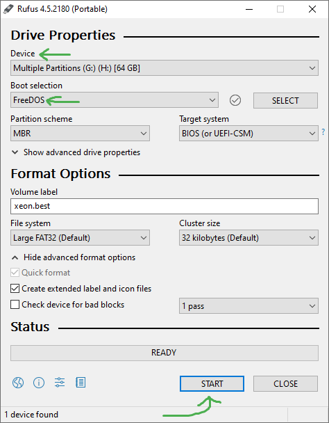
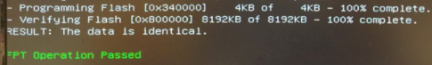

Intel Flash Programming Tool (FPT)
What is Intel FPT?
Intel Flash Programming Tool is a utility that programs internal flash memory via SPI on Intel Platform Controller Hub (PCH) and older I/O Controller Hub (ICH) systems.
FPT can read and write data to the BIOS chip on the motherboard, which can be used for modifying or dumping BIOS firmware on unlocked LGA 2011(-3) socket boards, commonly found in Chinese-made motherboards.
The tool can be operated in DOS, EFI, and Windows environments.
Using FPT from a Flash Drive
FPT can be used from a flash drive, providing a convenient and portable solution for flashing firmware. The DOS version of FPT can be used from a flash drive by creating a bootable FreeDOS USB and running the fpt.exe executable from it.
- Use your favorite software to create a bootable USB with FreeDOS. For this example, we'll use Rufus. If you're also using Rufus, be sure to copy all the settings from the screenshot.
 - Download the FPT archive from the top of this page, extract it, and move the files from the "DOS" folder in the archive onto the USB with FreeDOS.
- (Optional) If you want to flash firmware and not only make a backup, put the firmware file directly onto the USB too.
Using FPT from Windows
FPT can also be safely used from Windows. You can find the files for x86 and x64 editions of FPTW in the same archive downloaded from above.
Dumping BIOS Firmware
Whether you're using FPT from a DOS environment or directly from Windows, the commands are the same.
A full flash dump can be taken with a single command: fpt -d dump.bin (or fptw64.exe -d dump.bin on 64-bit Windows systems). This command will instruct FPT to read the entire contents of the flash memory and save it to a full backup file named dump.bin.
FPT on Windows will require administrator permissions!
Flashing BIOS Firmware
To flash a BIOS firmware, use the following command: fpt -f bios.bin (or fptw64.exe -f bios.bin on 64-bit Windows systems), assuming the BIOS firmware file (bios.bin) is in the same directory as the FPT executable. This command will write the contents of the BIOS firmware file to the flash memory.
As a safety measure, it's recommended to run the flash command twice to ensure the flash was successful. This helps to verify that the flash process was completed correctly.
After a full successful flash, you can optionally disconnect the computer from the power supply and take out the CMOS battery for around 15 seconds.

Recovering from a Bricked BIOS
If for some reason you flashed a faulty BIOS, or zero'd it out, and you're now experiencing a postcode FF or boot issues after flashing, even after you've tried to remove the CMOS battery and completely remove power from the computer, there's still hope for recovery.
If you have a backup of your original BIOS file, access to another working computer, and physical access to the motherboard, you may be able to use a chip programmer such as the CH341a, which has been proven to work reliably.
(full credit to Miyconst for the YouTube video)